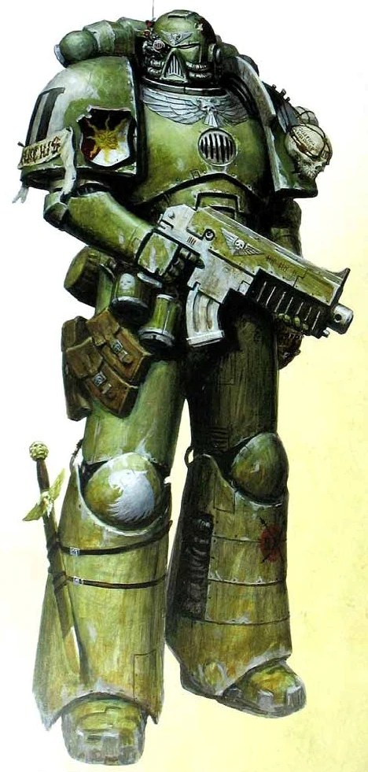
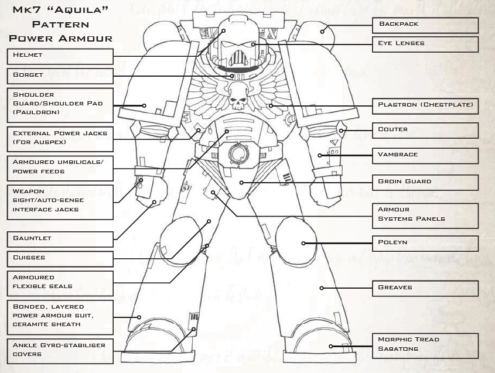

Power armour
| Power armour | |
|---|---|
 A Space Marine of the Raptors Chapter in a modified Mark VII Aquila suit, from a Chapter pict-record Artwork © Games Workshop | |
| Type | Sealed, powered combat armour |
| Wearers | Adeptus Astartes; Adepta Sororitas; Adeptus Custodes; traitor and renegade warbands |
| Earliest form | Thunder armour, c. 700.M30, Terra |
| First sealed suit | Mark II Crusade, c. 800.M30, Mars |
| Current Marks | Marks IV to VIII (Firstborn); Mark X (Primaris) |
| Makers | Adeptus Mechanicus forge worlds; Chapter armouries |
| Materials | Ceramite, plasteel, adamantium; fibre-bundle musculature |
| Interface | The Black Carapace, a gene-seed organ |
| Maintained by | Techmarines and Chapter serfs |
Power armour is the sealed, powered combat plate worn by the warriors of the Adeptus Astartes, and, in lighter and less capable forms, by the Adepta Sororitas, by militant Inquisitors and by the elite of other Imperial bodies. It is made of ceramite and plasteel plates over an adamantium frame, driven by bundles of artificial muscle fibre that repeat the wearer's movements and multiply his strength, and supplied by a backpack reactor. Its helmet carries the sensors and communicators called the auto-senses. A Space Marine does not merely wear his armour: a gene-seed organ called the Black Carapace joins his nervous system to the suit, so that the armour answers to thought and moves as his own body would.[1][2]
The oldest forms of the armour were worn in the Unification Wars of the 30th millennium by the Thunder Warriors and by the techno-barbarian warlords they fought. The first fully sealed suit, the Mark II, was made on Mars for the Space Marine Legions of the Great Crusade, and the Mechanicum has issued a new pattern roughly every few decades of crisis since. By long convention the patterns are called Marks and are numbered in the order of their introduction, though the Mechanicum has never recorded a Mark IX. The best known is the Mark VII Aquila of the Firstborn, still the commonest suit in the Adeptus Astartes. In the Era Indomitus it is being superseded by the Mark X, designed by Belisarius Cawl for the Primaris Space Marines.[3][2]
The armour is both equipment and relic. A suit may be worn by a dozen warriors over ten thousand years, repaired plate by plate, and each carries the honours of every battle it survived. Chapters treat the suits of their dead heroes as saints, and the Mechanicum treats the patterns themselves as sacred inheritance, which it is forbidden to change without the sanction of the Omnissiah.[4]
Design
[edit]Plates and frame
[edit]The outer layer of every Mark is a shell of shaped ceramite, a ceramic composite that resists heat, shock and the kinetic energy of most small arms. Under it lie plates of plasteel and adamantium, and under those a close-fitting bodyglove of sensor mesh. The shell is built as overlapping plates so that it turns blows aside rather than absorbing them. The pauldrons are the broadest plates, and carry a Chapter's heraldry and the markings of the wearer's company and squad. In the more advanced suits the shoulder plates contain reactive elements that burst outward to meet an incoming strike.[1]
Fibre-bundle muscles
[edit]The strength of the suit comes from its fibre bundles, an artificial musculature of contractile fibres that lies in the joints and along the limbs. Each bundle is driven by electrical current, and responds to the wearer's own muscular signals, carried through the gloves, boots and spinal ports of the suit. Without it, the armour would be too heavy to move; with it, a Space Marine can carry loads and make leaps that no unarmoured man could. A sealed suit weighs several times what an unarmoured Astartes does, and the fibre bundles make that weight vanish.[1]
Power pack and life support
[edit]The suit draws its power from a micro-fusion reactor in the backpack, supported by a reserve cell and a solar collector which can run the vital systems for about a solar month. The two characteristic exhaust nozzles on the backpack vent the heat of the reactor, and in a vacuum can be used for small manoeuvring jets. The backpack also holds the suit's air supply and purification, a reservoir of nutrient fluid that feeds the wearer without the need to eat or drink, and a de-tox system with several doses of stimulants and antidotes. The suit seals completely, so that a Space Marine can fight in a vacuum, under water or in a poisoned atmosphere, and its boot soles can be magnetised for footing in zero gravity.[1][2]

Auto-senses
[edit]The helmet houses the auto-senses: thought-activated vox, an auspex-link, audio filters, a range-finder, a targeting reticule, a tactical display with maps and waypoint markers, and photolenses that dim dazzling light and see in the infrared and ultraviolet. The grill covers a respirator and a voice amplifier. Weapon-handling data pass through the palm of the gauntlet, so that the helmet shows the ammunition count of the Space Marine's bolter and warns of a jam. The palm also sends the wearer's genetic code to the weapon, which is why a Space Marine's weapons will not fire in other hands.[1]
The suit monitors the wearer too. Heart rates, blood pressure, toxin levels and the function of the gene-seed organs appear on the visor, and can be sent by vox to the company Apothecary, who reads the suit's record of a wound and may use it to decide whether a fallen warrior is to be saved.[1]
The Black Carapace
[edit]The Black Carapace is the last gene-seed organ implanted in a Space Marine, in the final stage of his making. It is a black membrane that spreads under the skin of the back, and is set with neural contacts and transfusion ports. The ports of the armour plug directly into these contacts, and give the suit a direct connection with the wearer's nervous system. A Space Marine without a Carapace can wear a suit, but cannot use most of its functions. The Adepta Sororitas and the Inquisition, whose armour is made without the interface, must give up the finer controls and the strength enhancement of the full suit. For this reason the Carapace is often called the true mark of an Astartes.[1][5]
History by Mark
[edit]The Mark designations are not contemporary. The Mechanicus assigned them in the centuries after the Heresy, when it catalogued the patterns that survived, and some suits were made under other names. Dates for the earlier Marks are therefore estimates drawn from the sequence of campaigns in which they were first recorded.[a]
Thunder armour (Mark I)
[edit]The first suits were made on Terra in the last centuries of the Age of Strife, by the techno-barbarian warlords who held the old workshops. A suit of this kind was a powered torso and a pair of powered arms, with a power pack on the back and legs that were protected, but not driven. Terra's wars of this period were fought at close quarters, and a warrior's strength of chest and arm decided them. The armour was neither sealed nor made to a pattern: each forge made its own, and no two were alike.[2]
The Emperor of Mankind took the form for his own warriors in the Unification Wars (c. 700.M30), and the Thunder Warriors wore it, marked with the lightning and thunderbolt device, the Raptor Imperialis, on the breastplate. The Mechanicus later called it Thunder armour after the symbol. It was uniquely Terran, and it was worn only in the Wars.[2]

Mark II Crusade
[edit]When the Sol System was secured and the Treaty of Mars (739.M30) bound the Red Planet to the Emperor, the forges of the Mechanicum on Mars were set to make a new suit for the Legions of the planned Great Crusade. This was the Mark II, called Crusade armour, introduced c. 800.M30 as the Crusade began (798.M30).[b] It was the first sealed suit, with a full life-support system, so that a warrior could fight on an airless moon or in a poisoned atmosphere. It was built of rows of tiny interlocking ceramite rings, which made it very flexible. It was also tedious to repair. Many of the Mechanicus's artificers regarded it as the best suit ever made, but it was too complex to be produced in the quantities that the Crusade needed, and it was replaced by simpler patterns before the end of the Crusade.[2][5]
Mark III Iron
[edit]The Mark III was a specialist suit, designed after the Legions met the stubborn and well-defended underground holds of the Squats and suffered heavy losses fighting in their tunnels. It had much heavier armour on the front and less at the back, since it was made for a frontal assault where there was no cover, such as a boarding action or the clearing of a mine. It earned the name Iron armour, and the Mechanicus's name for it was Armorum Ferrum. The helmet, with its sloped plates to turn fire to either side, gave the later Marks their pattern. It was never meant to replace the Mark II, and it was too clumsy to use outside the tunnels. It appeared c. 850.M30.[c][2]
Mark IV Maximus
[edit]The Mark IV was the culmination of the Great Crusade. Made by the Mechanicum of Mars in the last decade of the 30th millennium (c. 995.M30), it used techniques and materials recovered from newly conquered worlds, and it dropped the many abutting plates of the Mark II for larger casings with flexible joints. This reduced the mobility of the wearer a little but made the suit much easier to build and mend. It also moved the main power cables to the outside, where they were armoured, and introduced the Phaeton backpack, smaller and lighter than before. The helmet, for the first time, moved with the wearer's head while keeping its seal.[d][2]
Several Legions made local variants. The Thousand Sons on Prospero made the Achean pattern, and the Ultramarines the Praetor pattern at the asteroid forge of Veridia. The Mark IV was meant to be the last pattern ever needed. It was the commonest suit at the beginning of the Horus Heresy, and it is still the commonest relic suit in the Imperium. The Chapters that can still make it, such as the Iron Hands and the Red Scorpions, are proud of it. Most of the old Chaos Space Marines also wear it.[2][5]
Mark V Heresy
[edit]The Mark V was an emergency suit. When war broke out in 005.M31, the Loyalist Legions were cut off from Mars and its forges, and could not replace the armour that they lost. Their artificers and Techmarines built a suit from whatever came to hand, using plasteel and ceramite plates held together with molecular bonding studs. These studs, set on the head, lower legs and left shoulder, became its mark. It was heavier than the Mark IV, and it overheated, so that many Space Marines had to turn down the output of their power packs. After the war most of the surviving suits were broken up for spare parts, because the Chapters did not wish to be reminded of the war. They remain common among the Traitor Legions. The Mechanicus gave the number V to all of the improvised patterns of this time, and the term Heresy armour is still used loosely for any such suit.[2]
Mark VI Corvus
[edit]The Mark VI was developed alongside the Mark V by the Mechanicum and by the artificers of the Legions, and it was meant to be a proper successor to the Mark IV. Accounts of its origin differ. In the Mechanicus's record, a thousand prototype suits were tested by the Raven Guard in the Scalland campaign against the Aeldari, shortly before the Heresy, and the Legion's changes were adopted. In the Raven Guard's own tradition, the first sets were shipped to them in 005.M31, after the Drop Site Massacre on Isstvan V, as a recognition of their sacrifice. Either way the suit was named Corvus after the Legion's primarch, Corvus Corax.[2][5]
The Mark VI is characterised by its beaked helmet and by a left shoulder plate set with bonding studs, since that plate took most of the damage in a fight. It has duplicate power cabling, and dual circuits, so that rare parts can be replaced by common ones. It is the lightest of the patterns. Assault Marines still prefer it for use with jump packs. By the Siege of Terra (013–014.M31) it was the commonest pattern in the field, and was worn by Loyalists and Traitors alike, since the Dark Mechanicum had copied its plans from the Loyalist forges.[2]
Mark VII Aquila
[edit]The Mark VII was a refinement of the Mark VI, developed in the last months of the Heresy. While the Traitors invaded the Sol System and the last battles for Mars were still being fought, the Mechanicum teams who had designed the Mark VI were taken to Terra, where they completed their work. The first suits reached the Loyalist Legions on Terra and Luna as the Siege began (c. 013.M31).[e] The Mark VII has a heavy chest plate to guard the power cables at the chest, a compact helmet with a vox grill, and the Aquila on the breast. The Emperor had decreed during the Crusade that only the Emperor's Children could wear the Aquila. When they turned traitor he gave it to all who stayed loyal, and the Mark VII is thus called Aquila armour, or in High Gothic Armorum Impetor.[2]
The Mark VII is the commonest suit of the Firstborn Space Marines of the Era Indomitus, more than ten thousand years after it was introduced. Parts of the Mark VI and VII fit one another, and armouries often use both.[2]
Mark VIII Errant
[edit]The Mark VIII, known as Errant armour, was the first new suit that the Imperium made after the Heresy, and its late appearance shows how little the Mechanicus's art has progressed in ten millennia. Its Mark VII frame hides the torso cables behind articulated panels, adds a raised collar to stop a round glancing off the breastplate into the neck joint, and has better protection at the hips. It entered service c. M38 in small numbers, and has been given mostly to sergeants and officers, and to the veterans of the Deathwatch, so that it has become a sign of rank.[f][2]
Mark X: Tacticus, Phobos and Gravis
[edit]The Mark X is the armour of the Primaris Space Marines. Roboute Guilliman had commissioned the creation of a new kind of Space Marine in the years after the Heresy, and the Archmagos Dominus Belisarius Cawl designed the armour with them over ten thousand years, drawing on the best of the older Marks, and especially the Mark IV and the Mark VIII. It was released from stasis with the Primaris Marines in the Ultima Founding (999.M41, c. 000.M42), and its first wearers were the front of the Indomitus Crusade.[3][6]
The Mark X is not one suit. It is a modular design that fits a standard undersuit, so that the same armour can be built into several forms:
- Tacticus, the standard multi-role pattern, worn by Intercessors, Hellblasters and Desolation squads;
- Phobos, lighter and streamlined, with silent servo-motors, for Reivers, Incursors and the stealth units, and for the captains and Librarians who lead them;
- Gravis, a heavier suit with thicker ceramite for Heavy Intercessors and Eradicators, and, with a built-in jump pack, for Inceptors;
- Omnis, a blend of Gravis and Phobos used by the Suppressors of the Vanguard.
Cawl's suits carry a Machine spirit of a new design, and the Mechanicus has not yet agreed whether they should be consecrated in the old way.[6]
The Marks
[edit]| Mark | Name | Introduced (Imperial date) | Origin | Notes |
|---|---|---|---|---|
| I | Thunder | c. 700.M30 | Terra, workshops of the Unification Wars | Powered torso and arms; unsealed; no standard design |
| II | Crusade | c. 800.M30 | Mars, forges of the Mechanicum | First sealed suit; ring-plate armour; hard to repair |
| III | Iron (Armorum Ferrum) | c. 850.M30 | Mars | Heavy frontal armour for tunnels and boarding actions |
| IV | Maximus | c. 995.M30 | Mars, with Legion variants (Achean, Praetor) | Large casings, external cables, moving helmet; commonest relic suit |
| V | Heresy | 005.M31 | Legion armouries and Techmarines | Improvised; bonding studs; heavy, overheats |
| VI | Corvus | c. 004–005.M31 | Mars; Raven Guard armoury | Beaked helmet; dual circuits; lightest Mark |
| VII | Aquila | c. 013.M31 | Terra and Luna, Mechanicum teams from Mars | Chest Aquila; compact helmet; the commonest Firstborn suit |
| VIII | Errant | c. M38 | Forge worlds | Hidden cables; raised collar; limited issue |
| X | Tacticus, Phobos, Gravis, Omnis | 999.M41 | Mars, under Belisarius Cawl | Modular; Primaris only |
Variants
[edit]Terminator armour
[edit]The heaviest suit in the Imperial armoury is the Tactical Dreadnought Armour, called Terminator armour, which has a full adamantium exoskeleton under ceramite and plasteel plates, and is worn by the veterans of the First Company and by a few others. It was developed alongside the Mark IV and has its own series of patterns. It is described in a separate article.[2]
Artificer armour
[edit]Artificer armour is a suit of any Mark, altered by master craftsmen and given to the Space Marines who have earned it: Chapter Masters, captains and their honour guards, and the veterans of the Chapter. Its damage-control systems and its denser materials make it protect better than standard armour, at times rivalling Terminator plate, although it cannot carry the same heavy weapons. Many suits are relics of the Great Crusade or the Heresy, and a few are older than the Imperium. The Techmarines wear an armour of the same kind, which several generations of them have refined with servo-arms and tools.[1]
Sororitas power armour
[edit]The Adepta Sororitas wear a lighter power armour, made on Mars at the order of the High Lord Goge Vandire in the 36th millennium. It is of the same kind as the Space Marines' suit but without the Black Carapace, so that it gives less strength and fewer life-support functions. It is still the best armour a human warrior can wear. The Sisters wear the Sabbat-pattern helm, which has had a rebreather since the mid-38th millennium. It is the only part of Vandire's rule that survived his death in the Reign of Blood (c. 288.M36).[5]
Custodian armour
[edit]The Adeptus Custodes wear a suit of their own, made in the Great Crusade, which is far more advanced than any Space Marine suit. It is built of auramite, the golden alloy that the Emperor's own armour was made of, and each is made for its wearer. It is not a Mark and it is not catalogued by the Mechanicus.[5]
Traitor armour
[edit]The Chaos Space Marines wear the suits that they carried with them into the Eye of Terror in 014.M31, generally Marks II, IV, V and VI, patched with parts of newer suits taken from the Loyalists they have killed. Warpsmiths keep the suits alive, and many have been changed by the Warp: plates that have grown spikes, helmets fused to their wearers, or suits that have become living flesh. The Inquisition treats the sight of a Mark V among the wearers of the Imperium as a cause for suspicion.[7]
Other forms are worn by the Grey Knights, whose Aegis armour is warded against the Warp, and by the Space Wolves, whose Rune Priests inscribe their suits with runes of protection. Both are made from the standard Marks.[2]
Manufacture and maintenance
[edit]All power armour is the work of the Adeptus Mechanicus. The great forge worlds make the plates, cables and fibre bundles, and the Chapters that have their own forges, and so can make armour for themselves, are few. A suit takes many solar decades to build, with rites for each stage: the Mechanicus says that a machine's spirit is placed in it when its parts are blessed, and a suit built without them will be sluggish and will fail. The forges of Mars made most of the armour of the Great Crusade, and the loss of its forges in the Schism of Mars cost the Imperium the means to make much of it again.[4][5]
In the field the suits belong to the Techmarines, who care for the armour and weapons of the Chapter, with the aid of the Chapter serfs, who clean, repair and ready them. Before a Space Marine enters battle he is armed in a ritual, which varies from Chapter to Chapter. The serfs fit the suit piece by piece, with prayers to the Emperor of Mankind and with unguents and oaths addressed to the armour's machine spirit, and the Marine wakes the suit with his own mind.[4]
Pieces of old armour are sought out and revered. A Chapter will rebuild a suit with plates from several Marks, each bearing the memory of a battle, and in the Era Indomitus one often sees a suit with a Mark IV chest, a Mark VI helm and a Mark VII backpack. The Mechanicus accepts such alterations, but only if the Techmarine in charge performs the rites for each.[5]
Legacy
[edit]Power armour is the most recognisable object in the Imperium, and the Space Marines' armour, with its heraldry and its Aquila, is the image that most citizens have of the Emperor's wrath. The Chapters regard it as a relic, and many of the Chapters' own traditions concern it: the mourning of a fallen warrior's suit, the practice of marking its plates with the names of the battles that it has seen, and the tradition that a Space Marine without a helmet shows his trust in his brothers. The Ecclesiarchy preaches that the Emperor's angels cannot be killed in their armour, which is a doctrine that the Chapters do not encourage.[5]
Its history is, to the Mechanicus, a history of decline. The Marks since the Heresy are all revisions of those made in the Great Crusade, and the single great advance, the Mark X, was made by a magos whom the Priesthood regards as a heretek. In the Era Indomitus the Marks of the Firstborn are being replaced by those of the Primaris Marines, and the oldest suits are being kept in the Chapters' armouries as relics.[6][3]
Timeline
[edit]| Date | Event |
|---|---|
| c. M25 – M30 | The techno-barbarian warlords of Terra build powered armour in the Age of Strife. |
| c. 700.M30 | The Thunder Warriors wear Thunder armour in the Unification Wars.[g] |
| 739.M30 | The Treaty of Mars binds the Mechanicum to the Emperor. |
| 798.M30 | The Great Crusade begins; Mars is ordered to make armour for the Legions. |
| c. 800.M30 | The Mark II Crusade, the first sealed suit, enters service. |
| c. 850.M30 | The Mark III Iron is made after the wars with the Squats. |
| c. 995.M30 | The Mark IV Maximus is made at Mars. |
| c. 000.M31 | Most Legions are equipped with the Mark IV; Legion variants appear. |
| 005.M31 | The Horus Heresy begins; the Mark V Heresy improvised in the Loyalist Legions. |
| 005.M31 | The Schism of Mars closes the Martian forges to the Loyalists; the Raven Guard receive the first Mark VI after Isstvan V. |
| c. 013.M31 | The Mark VII Aquila is built on Terra; the Emperor grants the Aquila to all loyal Space Marines. |
| 013–014.M31 | Mark VI and VII suits are worn on both sides in the Siege of Terra. |
| 014.M31 | The Traitor Legions retreat into the Eye of Terror with their armour. |
| c. 121.M31 | Roboute Guilliman commissions a new kind of Space Marine from the Mechanicum. |
| c. M36 | The Reign of Blood; Sororitas armour made on Mars at the order of Goge Vandire. |
| c. M38 | The Mark VIII Errant enters service in small numbers. |
| 999.M41 | The Mark X is revealed with the Primaris Space Marines in the Ultima Founding. |
| c. 000.M42 | The Mark X Tacticus, Phobos and Gravis are carried into the Indomitus Crusade. |
See also
[edit]Notes
[edit]- ^ Estimated; no record gives an exact year.
- ^ Estimated; no record gives an exact year.
- ^ Estimated; no record gives an exact year.
- ^ Estimated; no record gives an exact year.
- ^ Estimated; no record gives an exact year.
- ^ Estimated; no record gives an exact year.
- ^ Estimated; no record gives an exact year.
References
[edit]- ^ a b c d e f g h Codex: Space Marines (9th Edition), pp. 40, 141, 175. Games Workshop. Abnett, Dan. Know No Fear (novel). Black Library, pg. 20.
- ^ a b c d e f g h i j k l m n o p q Thorpe, Gav. Deliverance Lost (novel). Black Library, pp. 298-300. Abnett, Dan. The End and the Death: Volume 1 (novel). Black Library, Part 1, Ch. 1.
- ^ a b c Codex Adeptus Astartes - Space Marines (8th Edition), pp. 10, 23, 68, 71. Games Workshop. Codex Heretic Astartes - Chaos Space Marines (8th Edition), pg. 63. Games Workshop.
- ^ a b c Codex: Space Marines (8th Edition) (Revised Codex), pp. 12, 24, 70, 76. Games Workshop. Codex: Vanguard Space Marines (8th Edition), pg. 7. Games Workshop.
- ^ a b c d e f g h i Psychic Awakening - Blood of Baal (8th Edition), pg. 33. Games Workshop. Dembski-Bowden, Aaron. Master of Mankind (novel). Black Library.
- ^ a b c Warhammer 40,000: Core Rulebook (8th Edition), pg. 60. Games Workshop. Codex: Chaos Space Marines (6th Edition), pg. 37. Games Workshop.
- ^ Codex: Space Marines (6th Edition) (Digital Edition), pp. 26-27, 221-225. Games Workshop. Codex: Grey Knights (5th Edition), pp. 21, 63. Games Workshop.